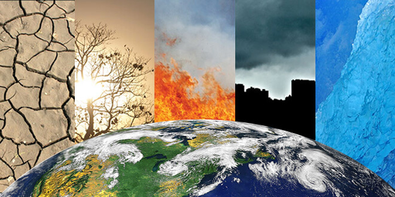

Conforme o clima muda, os humanos vivenciam as violências dessas mudanças. A mudança climática é um dos maiores desafios do nosso tempo. Seus impactos, que afetam desde a produção de alimentos até o aumento do nível do mar – aumentando o risco de inundações catastróficas – têm desestabilizado as sociedades e o meio ambiente de uma maneira global e sem precedentes.
O cenário mundial após a Revolução Industrial mudou não só economicamente, mas também o modo produtivo, provocando mudanças no cenário ambiental. O consumo exagerado e a produção elevada, além de aumentar a exploração dos recursos naturais, provocaram também o aumento da poluição atmosférica, por causa da emissão de gases poluentes pelas indústrias e automóveis. A produção também acelerou o desmatamento, o que também provocou alterações no clima.
O dióxido de carbono é proveniente da queima dos combustíveis usados em diversas atividades cotidianas, por exemplo, nas indústrias, nos transportes, no aquecimento das casas. Além dele, há outros gases que provocam o chamado efeito estufa, um fenômeno natural e necessário para a preservação da vida na Terra, pois mantém o planeta aquecido e habitável ao permitir que parte da radiação solar refletida de volta para o espaço seja absorvida pela Terra.
Desta forma, à medida que as populações, as economias e os padrões de vida crescem, o mesmo acontece com o nível cumulativo de emissões de GEE. Com a crescente emissão de gases poluentes para a atmosfera, o efeito estufa intensifica-se provocando o aumento da temperatura média da atmosfera terrestre, que se chama Aquecimento Global. A nossa história evolutiva está intrinsecamente ligada às alterações provocadas no clima, as quais são observadas desde a formação do planeta Terra.
As mudanças climáticas pelas quais o planeta vem passando, por causa das ações antrópicas, podem gerar diversos impactos, que deverão ser mais graves em países com menor capacidade para se adaptar às mudanças que ocorrerão.
A situação é considerada irreversível e seus efeitos devem ser sentidos nos próximos séculos ou até milênios. Isso aponta para a necessidade de uma mudança de atitude imediata para a redução das emissões dos gases de efeito estufa e para o combate às mudanças climáticas.
Causas
Queima de combustíveis fósseis para geração de energia
Atividades industriais e transportes
Desmatamento
Agropecuária
Descarte de resíduos sólidos
Consequências

Aquecimento global; Perda de cobertura de gelo nos polos; Subida do nível médio das águas do mar; Aumento da frequência de fenômenos climáticos extremos, como secas e chuvas; Alterações na disponibilidade de recursos hídricos; Desertificação; Alterações nos ecossistemas e perda de biodiversidade; Risco de insegurança alimentar e do colapso dos sistemas alimentares; Impactos na saúde e bem-estar da população humana.
Objetivos do Desenvolvimento Sustentável
13.1 Reforçar a resiliência e a capacidade de adaptação a riscos relacionados ao clima e às catástrofes naturais em todos os países.
13.2 Integrar medidas da mudança do clima nas políticas, estratégias e planejamentos nacionais.
13.3 Melhorar a educação, aumentar a conscientização e a capacidade humana e institucional sobre mitigação, adaptação, redução de impacto e alerta precoce da mudança do clima.
13.a Implementar o compromisso assumido pelos países desenvolvidos partes da Convenção Quadro das Nações Unidas sobre Mudança do Clima [UNFCCC] para a meta de mobilizar conjuntamente US$ 100 bilhões por ano a partir de 2020, de todas as fontes, para atender às necessidades dos países em desenvolvimento, no contexto das ações de mitigação significativas e transparência na implementação; e operacionalizar plenamente o Fundo Verde para o Clima por meio de sua capitalização o mais cedo possível.
13.b Promover mecanismos para a criação de capacidades para o planejamento relacionado à mudança do clima e à gestão eficaz, nos países menos desenvolvidos, inclusive com foco em mulheres, jovens, comunidades locais e marginalizadas.
Combustíveis fósseis: por que eles prejudicam o meio ambiente?
A liberação de gases provenientes da queima dos combustíveis fósseis ocasiona diversos problemas, isto é, poluição e aquecimento global.
Os combustíveis fósseis mais popularmente conhecidos são: o carvão mineral, o petróleo e o gás natural. Esses hidrocarbonetos são originados a partir da decomposição de resíduos orgânicos e embora apresentem inúmeros fatores que contrastam à sustentabilidade, os combustíveis fósseis ainda permanecem em realce, sendo, ainda muito utilizados para movimentar motores, aquecer materiais e produzir energia.
Devido à sua origem de matérias-primas que demoram milhões de anos para serem geradas, são considerados recursos naturais não renováveis. Estima-se que os utilizados atualmente são originados de matérias-primas de 65 milhões de anos atrás. Além de serem recursos não renováveis, os combustíveis fósseis causam danos irreparáveis ao meio ambiente.
Impactos ambientais causados pelo uso de combustíveis fósseis
- A poluição ambiental é uma das grandes desvantagens do uso de combustíveis fósseis. O dióxido de carbono, gás liberado durante a queima desse tipo de combustível, é o principal responsável pelo aquecimento global.
- O dióxido de enxofre, um dos poluentes liberados também na combustão de combustíveis fósseis, é a causa principal da chuva ácida. Esse fenômeno pode levar à destruição monumentos feitos de alvenaria ou mármore e culturas agrícolas.
- A poluição originada a partir de automóveis (que utilizam combustíveis fósseis) e usinas de carvão pode causar sérios riscos à saúde. As doenças relacionadas à poluição variam de leve a grave e podem afetar significativamente a qualidade de vida. A poluição do ar pode resultar em asma, doença pulmonar obstrutiva crônica e câncer de pulmão. A exposição prolongada pode aumentar as infecções respiratórias na população em geral. As crianças e os idosos são mais vulneráveis a partículas finas e outras substâncias tóxicas no ar.
- Os combustíveis fósseis costumam ser transportados para o local desejado por meio de navios. É comum ouvir falar sobre vazamentos em petroleiros ou navios carregados de óleo cru para ser refinado. A consequência disso é que o petróleo contém algumas substâncias tóxicas que, quando misturadas com água, causam sérios impactos à vida aquática.
A indústria e as mudanças climáticas
Conforme o relatório do Balanço Energético Nacional, 2013, o setor industrial é responsável por 33,9% do consumo de energia total do País, sendo o maior consumidor de energia do Brasil. O aumento de 40,7% na tarifa de energia elétrica da distribuidora Elektro, autorizado em agosto pela Aneel (Agência Nacional de Energia Elétrica) afetou centenas de municípios do Estado de São Paulo e do Mato Grosso do Sul, impactando os custos adicionais das indústrias na compra de energia, que acabam sendo repassados para todos os níveis da cadeia de negócio.
Ademais, verifica o aumento anual de 2,2% das emissões de gases de efeito estufa no planeta. A queima de combustíveis fósseis corresponde a 80% dos lançamentos ocorridos entre 2000 e 2010, principalmente da geração de energia e da indústria. O alto consumo energético das indústrias evidencia que a eficiência energética ainda não é prioridade para o segmento. A ‘descarbonização’ da geração de eletricidade é essencial para o funcionamento das estratégias de redução de emissões e, consequentemente, da diminuição dos impactos no meio ambiente.
Atividades industriais como produção de aço e ferro, refino de petróleo e fabricação de cimento, celulose e papel usam intensivamente a energia e são responsáveis por, aproximadamente, 85% do total das emissões de CO2 do segmento. O relatório do IPCC aponta que grande aliado para a redução de emissões de CO2 é a inovação tecnológica. Cada vez mais é essencial a adoção de soluções focadas em eficiência energética, que poupam ou substituem os combustíveis fósseis e proporcionam a redução no consumo da energia elétrica.
Há diversas tecnologias energeticamente eficientes e que reduzem as emissões de CO2. Os sistemas de controle de refrigeração, por exemplo, garantem que o consumo de energia seja, automaticamente, correspondente à necessidade real. Se todos os supermercados modernos do mundo aperfeiçoassem seus sistemas de refrigeração, 16 milhões de toneladas de CO2 seriam poupadas por ano. Outro exemplo de tecnologia em prol da eficiência energética são os conversores de frequência, que controlam o fornecimento de energia para motores elétricos e podem poupar de 15% a 40% de energia, dependendo de sua aplicação. Para que haja a transformação necessária para revertermos este cenário, é preciso inserir as questões de eficiência energética e redução da emissão de gases de efeito estufa nos planejamentos estratégicos das indústrias. É possível combater as mudanças climáticas por meio de tecnologias apropriadas que não agridam o meio ambiente e, ao mesmo tempo, otimizem a produtividade.
Desmatamento é 2ª maior causa das mudanças climáticas, revela FAO
As florestas são aliadas do homem no combate às mudanças climáticas, absorvendo por ano cerca de 2 bilhões de toneladas de CO2. Mas quando são desmatadas, as coberturas vegetais do planeta se transformam em motores do aquecimento global. Aproximadamente 20% das emissões de gases do efeito estufa são causadas pelo desmatamento. Em relatório divulgado neste mês (06/07), a Organização das Nações Unidas para a Alimentação e Agricultura (FAO) identifica um aumento na destruição das superfícies verdes do planeta.
De 1990 e 2015, a área da Terra coberta por florestas caiu de 31,6% para 30,6%. A agência da ONU aponta que o desmatamento é a segunda maior causa das mudanças climáticas, ficando atrás apenas da queima de combustíveis fósseis. As emissões geradas pela destruição da cobertura vegetal são maiores que as de todo o setor de transporte.
O levantamento da FAO revela ainda que a interrupção ou redução do desmatamento em zonas tropicais responderia por até 30% da capacidade de mitigar as mudanças climáticas.
Um obstáculo à proteção das florestas é o consumo de carvão vegetal. Nas regiões em que a demanda é alta, a produção exerce pressão sobre os recursos florestais e contribui para a degradação dos ecossistemas, especialmente quando o acesso às florestas não está regulamentado. Segundo o estudo da FAO, a população que depende de lenha varia de 63% na África a 38% na Ásia e 16% na América Latina.
Os continentes africano e sul-americano também estão na contramão do uso sustentável das superfícies verdes. Nos últimos 25 anos, cresceram no mundo as florestas manejadas para a conservação dos solos e das águas, mas essa expansão não foi verificada na África nem na América do Sul. Os territórios utilizados de maneira responsável representam hoje 25% de toda a cobertura vegetal do planeta. Nos países sul-americanos, o índice cai para apenas 9%.
Agricultura e mudança do clima
A Agropecuária e o desmatamento são as maiores fontes de emissão de gases de efeito estufa no Brasil. No mundo, o cenário é diferente, as emissões mais importantes vêm da queima de combustíveis fósseis, mas as emissões globais do setor agropecuário global estão aumentando e são de difícil redução.
Segundo o Painel Intergovernamental sobre Mudanças Climáticas (IPCC) (p.869), a produção agropecuária emite entre 10% e 12% de todas as emissões de gases de efeito de estufa (GEE) geradas pela atividade humana (emissões antrópicas). Esta proporção sobe para mais de 20% quando se inclui as mudanças no uso da terra, o desmatamento e o processamento dos alimentos. E estas emissões são crescentes: segundo a FAO/ONU, as emissões da agropecuária aumentarão em 30% até 2050.
A maioria das emissões da agropecuária é composta pelo metano que vem da fermentação entérica e dos dejetos da pecuária bovina e do cultivo de arroz, além do óxido nitroso que vem do uso de fertilizantes.
A importância da agropecuária no Brasil é muito maior que no resto do mundo: em 2016[1], a agropecuária foi responsável por aproximadamente 22% das emissões brutas e 30% das emissões líquidas de gases de efeito estufa. As emissões diretas do setor agropecuário totalizaram 499,3 milhões de toneladas de CO2 equivalente (CO2e), um aumento de 1,7% em relação ao ano anterior. No que toca somente à agropecuária, nosso país é o terceiro maior emissor global, atrás apenas da China e da Índia.
No Brasil, 2:3 das emissões da agropecuária correspondem ao metano liberado pela fermentação entérica. As emissões do cultivo do arroz não são expressivas pelo fato de parte importante da produção nacional ser feita em terras secas, onde não há a formação de metano. A questão é agravada porque mesmo que fossem implantadas todas as medidas atualmente consideradas como de “custo aceitável” só se chegaria a 2:5 da meta de redução atribuída à agropecuária. Todos os aspectos da segurança alimentar estão ameaçados pela mudança climática, e um aumento de temperatura entre 3°C e 4°C traz “riscos substanciais à produção global de alimentos”.
No Brasil, assim como em outras nações florestais, as emissões do desmatamento estão bastante ligadas à expansão da fronteira da atividade agropecuária. Em 2016 as emissões brasileiras provenientes do desmatamento representaram 51% das emissões nacionais, um crescimento de 23% em relação ao ano anterior.
Estima-se que a agropecuária seja diretamente responsável por 80% do desmatamento no mundo, de modo que o desmatamento e outras mudanças no uso da terra contribuem com algo entre 9 e 11% das emissões (IPCC, p.869).
As emissões agrícolas de gases de efeito estufa estão aumentando
As emissões de metano e óxido nitroso da agropecuária aumentaram 14% na primeira década deste século (FAO, p.20).A FAO indica que esta tendência continuará, com as emissões aumentando em 18% até 2030 e em 30% até 2050, em comparação com a década que vai de 2001 a 2010, o que torna mais difícil limitar o aumento da temperatura média global.
Este aumento nas emissões se deve em parte ao aumento da demanda global por alimentos em pelo menos 60% até 2050, quando comparada com 2006. Este aumento de demanda é resultado do aumento da população, do crescimento da renda e da rápida urbanização.
O aumento do consumo de carne nos países em desenvolvimento e outras mudanças em suas dietas também aumentam esse impacto. O consumo per capita de carne no mundo em desenvolvimento dobrou desde 1980. E deve dobrar mais uma vez até 2050, à medida que aumenta o consumo nos países em desenvolvimento.
A mudança climática terá grande impacto na atividade agropecuária
A segurança alimentar será potencialmente impactada pela mudança climática e um aumento da temperatura global entre 3°C e 4°C imporia riscos significativos para a produção de alimentos. As evidências sugerem que a produção agrícola já está sendo afetada. De acordo com um estudo, entre 1980 e 2008 a produção de trigo caiu 5,5% e a produção de milho caiu 3,8% como resultado do aumento das temperaturas. Cientistas esperam que a produtividade das colheitas diminua ainda mais em regiões que já estão sofrendo pela falta de alimentos. A produtividade das lavouras de milho em toda a África subsaariana poderia cair até 2/5 até a metade do século, por exemplo, e a do trigo poderia cair mais de um terço até 2050.
O aumento da temperatura também pode aumentar o impacto da agropecuária no aquecimento global e pode estar acelerando a liberação de metano de arrozais, por exemplo.
Influência dos resíduos sólidos nas mudanças climáticas
Os seres humanos consumem os recursos naturais de maneira incontrolável. O maior transtorno deste consumo desenfreado são as perigosas alterações do clima.
A redução da geração de lixo é um importante fator que contribui para a minimização dos problemas ambientais. É fundamental que todas as pessoas em suas comunidades, os governantes e as indústrias tornem-se socialmente responsáveis.
- Os produtores deveriam fazer produtos recicláveis, com embalagens que geram menos lixo e que sejam ecologicamente corretas;
- Os consumidores deveriam adquirir produtos com menos embalagens, e comprar apenas o que é necessário, deixando de lado o consumo excessivo, além de utilizar bolsas de pano para fazer compras e evitar os sacos plásticos, também é importante aderir ao sistema de separação dos resíduos gerados de forma individual, para que cada um faça sua parte;
- As indústrias deveriam introduzir a reciclagem na etapa produtiva e evitar o desperdício de matéria-prima.
As mudanças climáticas podem ter causas naturais ou podem ser consequência das atividades humanas. O IPCC (Painel Intergovernamental de Mudanças Climáticas), órgão das Nações Unidas que é responsável por produzir informações científicas, afirma que há 90% de certeza que o aumento de temperatura na Terra está sendo causado pela ação do homem.
Os resíduos e as emissões de gases
Nos lixões e aterros controlados ou sanitários, o gás metano liberado, que por parte do lixo é proporcional à população – é queimado por medida de segurança, pois ele pode pegar fogo e há o risco de explodir. No entanto, quando o gás metano é queimado, forma-se o gás carbônico, que contribui para o aumento do efeito estufa. O CO2 é o gás que tem maior contribuição para o aquecimento global, porque representa mais de 70% das emissões de gases de efeito estufa (GEE) e o seu tempo de permanência é de no mínimo cem anos, resultando em impactos no clima ao longo de séculos.
Como as emissões podem ser reduzidas?
– Recuperação de metano nos aterros;
– Incineração de resíduos com recuperação de energia;
– Compostagem;
– Reciclagem;
– Minimização de resíduos.
SEJA UM AGENTE DE TRANSFORMAÇÃO!
Pense!
Reduza o desperdício de comida.
Reflita!
Conserve os solos e a água.
Planeje!
Compre roupas de segunda mão.
Combate!
Faça pequenos trechos a pé.
Aja!
Produza menos lixo.
Preserve!
Desligue a luz ao deixar um ambiente.
Sobre mim
Bem-vindo ao Crise Invisível!
O meu nome é Rafael Alves de Oliveira, sou formado em Técnico em Recursos Humanos e possuo experiências em criação de site HTML e CSS. É um prazer poder contribuir aos seus conhecimentos ambientais. O meu desejo é que você possa aprender bastante a respeito dos eventos climáticos que assolam o planeta Terra, e sobre como colaborar ao combate dessas causalidades.